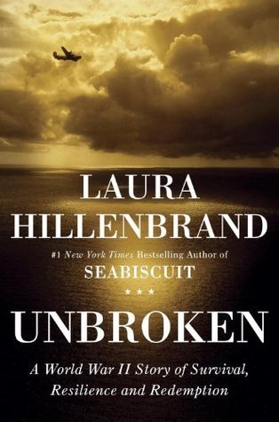
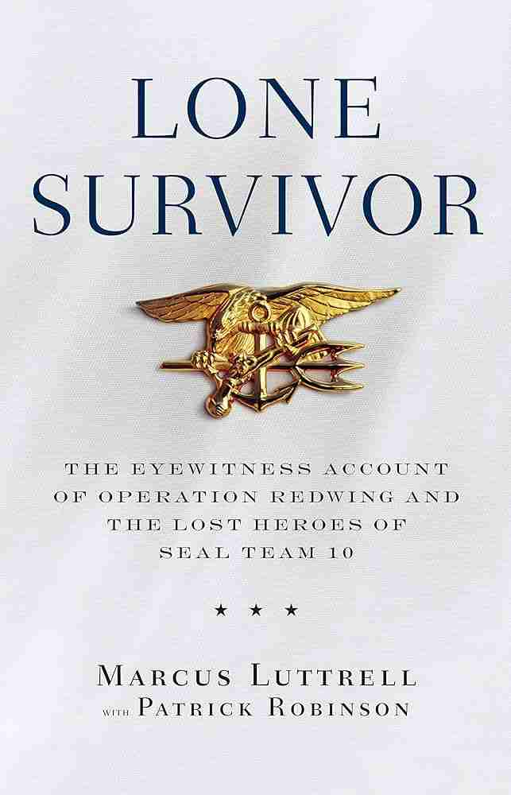
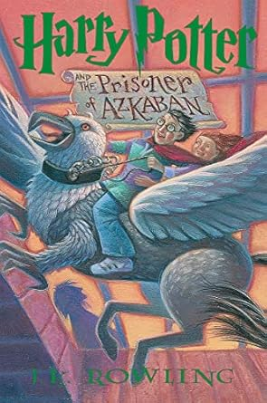

I did a four day ski trip at Jackson Hole, Wyoming, this past March. The visibility was pretty low for most of the trip, but we got plenty of fresh snow through out the week! I would recommend the Hoback trails to the left of Rendezvous Mountain for anyone planning to do a ski trip at Jackson Hole in the future. We were also able to see two moose at the base of the mountain on two separate occasions!
| Unbroken: A World War II Story of Survival, Resilience, and Redemption | Lone Survivor: The Eyewitness Account of Operation Redwing and the Lost Heroes of SEAL Team 10 | War Room: The Legacy of Bill Belichick and the Art of Building the Perfect Team | Harry Potter and the Prisoner of Azkaban |
|---|---|---|---|
|
 Hallman, Tom. Cover illustration. Unbroken: A World War II Story of Survival, Resilience, and Redemption, by Laura Hillendbrand, Random House, 2010. Front cover. |
 Cover illustration. Lone Survivor: The Eyewitness Account of Operation Redwing and the Lost Heroes of SEAL Team 10, by Marcus Luttrell & Patrick Robinson, Little, Brown and Company, 2007. Front cover. |
Cover illustration. War Room: The Legacy of Bill Belichick and the Art of Building the Perfect Team, by Michael Holley, HarperCollins, 2012. Front cover. |
 GrandPré, Mary. Cover illustration. Harry Potter and the Prisoner of Azkaban, by J.K. Rowling, Scholastic, Inc., 1999. Front cover. |
| Laura Hillenbrand | Marcus Luttrell & Patrick Robinson | Michael Holley | J.K. Rowling |
| A biography of a World War II veteran that recounts his experiences as an olympian during the 1936 Olympics and prisoner of war for over two and a half years. | A look into Marcus Luttrell's journey to become a Navy SEAL and his recounts of surviving Operation Redwing in Afghanistan. | A recounting of the New England Patriots dynasty during its early years with reviews from former members of the franchise. | Harry Potter attends his third year at Hogworts and must contend with Sirius Black, an escaped prisoner from Azkaban. |